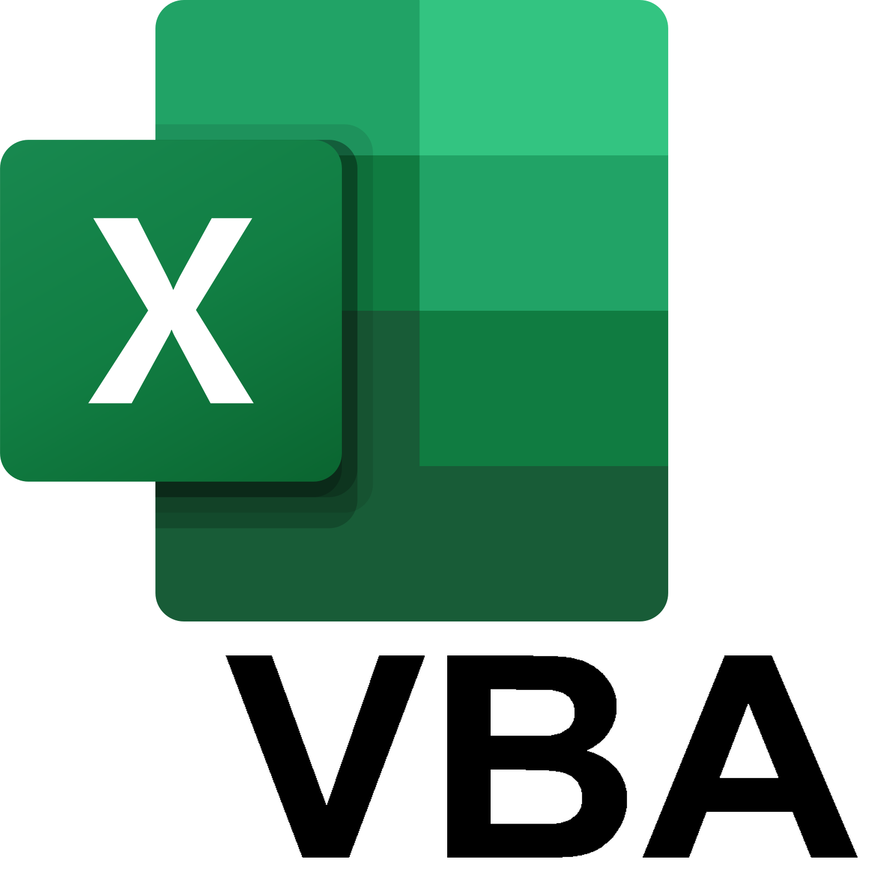
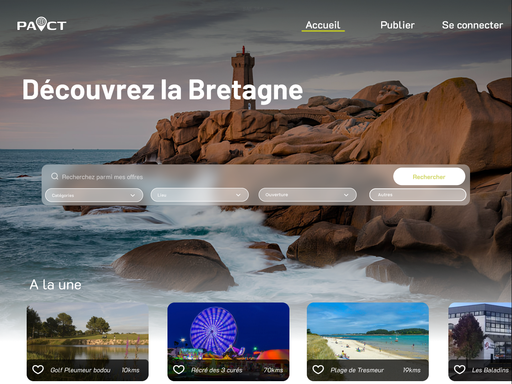

Depuis le début de ma formation au BUT Informatique de l'IUT de Lannion, j'ai travaillé sur des projets variés couvrant le développement logiciel, les bases de données et l'administration système. Ces différentes missions m'ont permis de developper mon esprit d'analyse et ma capacité de gestion.
Filtrer :

ALT-01
Logiciel VBA - Suivi Projets (Orano)
VBAEXCELMAINTENANCE
Maintenance corrective et évolutive d'un outil de suivi d'activité pensé pour les chefs de projet chez Orano. Refactoring, optimisation et UX.
▸ Réaliser un développement d'applications
⚙️ Optimiser des applications informatiques
📋 Conduire un projet (Cycle Complet)
ALT-02
Outils internes VBA (Orano)
VBAAUTOMATIONDASHBOARD
Conception de nouveaux logiciels Excel/VBA internes (modèles prêts à l'emploi, tableaux de bord interactifs) pour faciliter le suivi opérationnel.
🔧 Conception et développement from scratch
📊 Structuration de données Excel
🤝 Collaboration avec les équipes métiers
STAGE-01
Premier Logiciel de Suivi (Orano)
VBAPOOMACROS
Développement du premier jet du logiciel Excel pour les chefs de projet durant mon stage de 2ème année. Architecture, codage, tests et formation utilisateurs en industrie.
✓ Architecture UX/UI Excel
✓ Graphiques et Tableaux de Bord dynamiques

S3-01
Plateforme de Services Web
PHPMVCCSSAGILE
Projet majeur : une plateforme web combinant "Le Bon Coin" et des avis "TripAdvisor". Travail en équipe de 6 en méthodologie Agile. Frontend responsive et animations.
Application pour une salle de spectacles (IHM, logique métier, BD). Couplée en amont de phase de planification (Matrice RACI, WBS, Gantt) avec MS Project.
Déploiement d'une stack Web complète sous Linux (Apache/PHP/MySQL) et exploitation d'une base de données massive (création MCD/MLD, imports CSV, requêtes complexes).